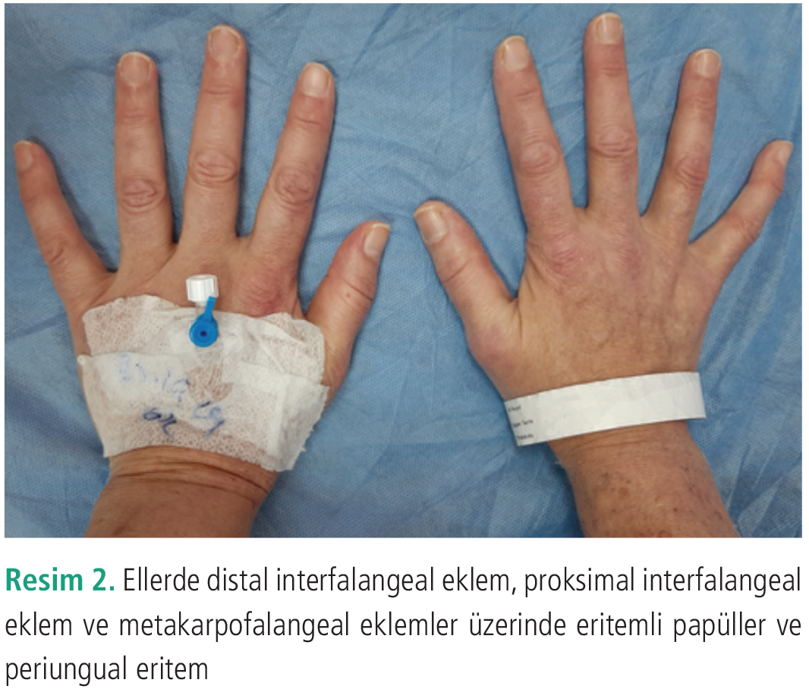
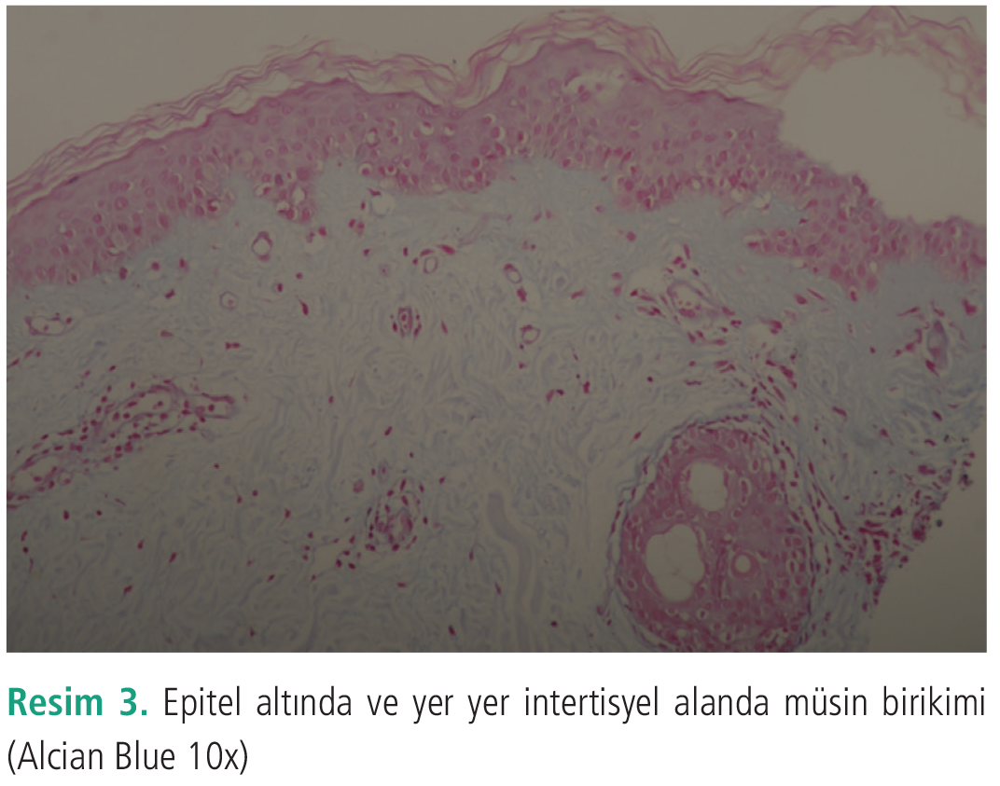
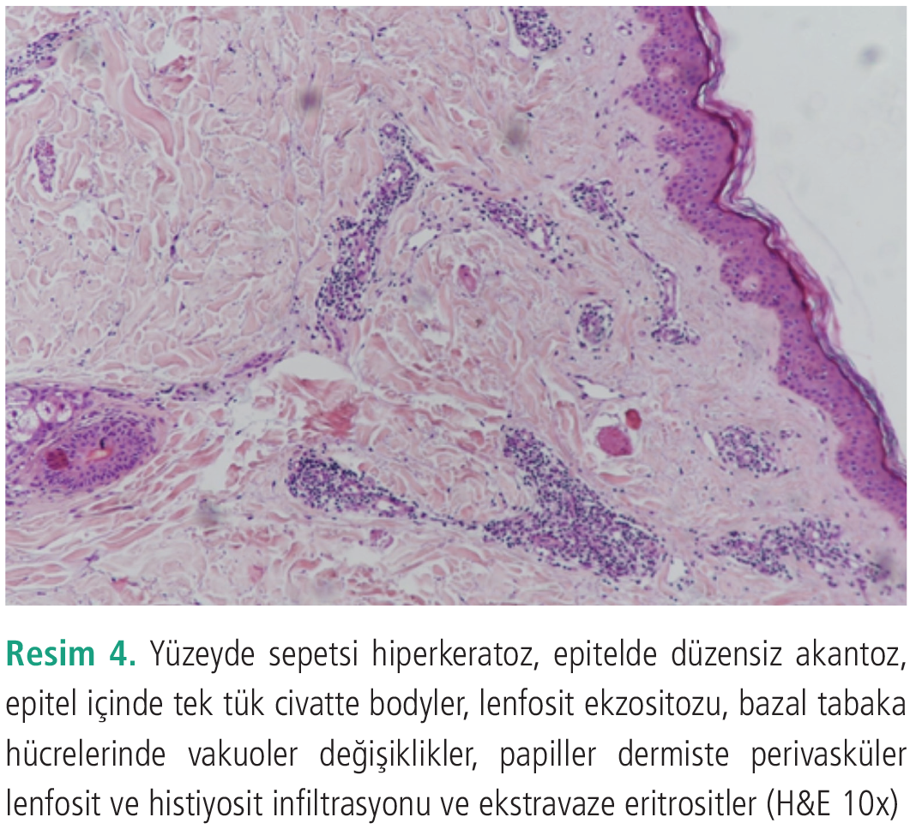

Olgu Sunumu
Dermatomiyozit ve Over Kanseri Birlikteliği: Bir Olgu Sunumu
1 Sağlık Bilimleri Üniversitesi, Prof. Dr. Cemil Taşçıoğlu Şehir Hastanesi, Dermatoloji Kliniği, İstanbul, Türkiye
2 Sağlık Bilimleri Üniversitesi, Prof. Dr. Cemil Taşçıoğlu Şehir Hastanesi, Patoloji Kliniği, İstanbul, Türkiye
Anahtar Kelimeler: Dermatomyozitmaligniteover karsinomu
Keywords: Dermatomyositismalignancyovarian cancer
Geliş: 10.05.2019Kabul: 21.11.2019Yayın: 07.10.2020
s. 120-123
Özet
ÖZET
Dermatomiyozit (DM) proksimal kas güçsüzlüğü ve özgün deri bulguları ile karakterize sistemik otoimmün bir hastalıktır. DM malign neoplazilerle ilişkili olabilir. Yetişkinlerde görülen DM internal malignitelerle birlikteliğinin %3-40 arasında görülebildiği bildirilmiştir. DM tanısı alan hastalar, hastalığın nedeni olabilecek olası bir malignite açısından sistemik olarak incelenmeli ve izlenmelidir. Olgumuz DM ve over kanseri ilişkisine bir örnektir. Bu makalede amacımız paraneoplastik DM ile ilgili özelliklere, olası mekanizmalara ve önerilen malignite tarama yöntemlerine değinmektir.
Tam Metin
Giriş
Dermatomiyozit (DM) proksimal kas güçsüzlüğü ve özgün deri bulguları ile karakterize sistemik otoimmün bir hastalıktır (1). Etiyopatogenezi tam olarak bilinmemektedir. İnsidansı 2-9/1.000.000 olarak bildirilmiştir (2). Yetişkinlerde görülen DM’nin internal malignitelerle birlikteliğinin %3-40 arasında olabildiği tahmin edilmektedir (3). Yapılan çalışmalarda en sık birliktelik gösteren maligniteler nazofarengeal karsinom, kolorektal, meme, akciğer, prostat ve hematolojik maligniteler olarak raporlanmıştır (4). Bu makalede DM tanısı alan ve sonrasında yapılan ileri tetkik ve araştırmalar neticesi over kanseri tanısı konulan erişkin bir kadın hasta sunulmuştur.
Olgu Sunumu
Kırk dokuz yaşında kadın hasta yüzde ve vücutta döküntü ve kaşıntı şikayeti ile kliniğimize başvurdu. Hastanın başvurudan 1 ay önce çenede kaşıntılı bir kızarıklık şeklinde başlayan, giderek tüm yüze, boyuna, sırta ve kollara yayılan döküntü şikayeti mevcuttu. Bu şikayetine halsizlik, tüm vücutta yaygın kas ağrısı, saçını taramada ve merdiven çıkmada güçlük ve el bileklerinde ağrı eşlik ediyordu. Hasta son bir ayda 3 kez ateş yüksekliği olduğunu belirtti. Özgeçmişinde huzursuz bacak sendromu ve soygeçmişinde ablasında akciğer kanseri tanıları mevcuttu.
Dermatolojik muayenesinde yüzde saçlı deri sınırından başlayarak alın ve yanaklara uzanan, yanaklarda nazolabial sulkusu da içeren, çeneye yayılım gösteren eritemli, yer yer telenjiektazilerin eşlik ettiği plaklar, göz kapaklarında lividi renkte rash ve ödem, boyunda, göğüs ön kısmında ve sırtta orta hattan omuzlara uzanan, kol ekstansör yüzlerinde de mevcut eritemli plak lezyonlar, ellerde distal interfalangeal eklem, proksimal interfalangeal eklem ve metakarpofalangeal eklemler üzerinde eritemli papüller ve periungual eritem görüldü (Resim 1,2). Saçlı deride oksipital bölgede lividi skuamlı plaklar izlenmekteydi.
Hastanın sağ skapular bölgesinden alınan punch biyopsi örneğinde yüzeyde sepetsi hiperkeratoz, epitelde düzensiz akantoz, epitel içinde tek tük civatte cisimcikleri, lenfosit ekzositozu, bazal tabaka hücrelerinde vakuoler değişiklikler, papiller dermiste perivasküler lenfosit ve histiyosit infiltrasyonu ve ekstravaze eritrositler görüldü. Alcian Blue ile histokimyasal boyamada epitel altında ve yer yer interstisyel alanda müsin birikimi izlendi (Resim 3,4). Direkt immünfloresan incelemede özellik saptanmadı.
Hastanın başvuru sırasında gerçekleştirilen tetkiklerinde hemogram aspartat aminotransferaz 48 U/L (N<35) kreatinin kinaz 196 (normal aralık 0-145 U/L) sedimentasyon 50 (normal aralık 1-15 mm/saat), C-reaktif protein 25 (N<5) saptandı. Antinükleer (ANA) ve profili çalışıldı, ANA 1:160 ince benekli patern pozitif iken ekstrakte edilebilir nükleer antijen antikorları, JO-1 antikoru dahil negatif bulundu.
Kas güçsüzlüğü açısından yapılan fizik tedavi ve rehabilitasyon bölümü konsültasyonu sonucunda kas kuvvetleri proksimallerde üst ekstremitelerde 4/5, alt ekstremitelerde 4/5 saptandı; distal kas kuvveti kaybı minimaldi. Elektromiyografi sonucunda proksimal kaslarda ılımlı miyojen tutulum saptandı.
Hastamızın yaşı, şikayetlerinin aniden başlaması, eşlik eden ateş yüksekliği ve ailede malignite öyküsü olması üzerine altta yatan olası bir malignite açısından araştırılmasına karar verildi. İstenen ek tetkiklerinde serum beta-2-mikroglobulin 3,45 mg/L (normal aralık 1,09 - 2,53 mg/L) ve kanser antijeni (CA) 125:1.360 (N<35) saptandı. Alfa-fetoprotein, karsinoembriyonik antijen, (CA) 15,3 ve CA 19,9 normal aralıkta görüldü. Gaitada gizli kan (GGK) incelemesi negatif ve posteroanterior akciğer (PA AC) grafisi normaldi. Batın ultrasonografisinde (USG) sağ adneksiel alanda 42x30 mm boyutlarında düzensiz konturlu solid kitle lezyon izlendi.
Kadın hastalıkları ve doğum bölümüne danışılan hastanın istenen alt batın manyetik rezonans görüntülemede sağ over lojunda 4 cm çapında, over kanseri ile uyumlu olabilecek solid lezyon ve her iki obturator zincirde en büyüğü 1,5 cm çapında lenf nodları izlendi. Preoperatif evreleme amaçlı tetkikleri tamamlandıktan sonra laparoskopik ooferektomisi planlandı.
Hastada mevcut bulgular ile tarafımızca da DM düşünülerek 1 mg/kg/gün prednizon ve 15 mg/hafta metotreksat tedavisi başlandı. Kontrollerinde kas güçsüzlüğü bulguları geriledi ve deri lezyonlarında kısmi bir yanıt izlendi.
Ooferektomi sonrası yapılan histopatolojik inceleme sonucu overin seröz adenokarsinomu olarak raporlandı. Hastanın operasyon sonrası kas güçsüzlüğü şikayetinde azalma mevcut olup takipleri devam etmektedir. Hastadan fotoğraflama ve biyopsi öncesi onam alınmıştır.
Tartışma
DM, hem kas, hem de derinin tutulduğu sistemik otoimmün bir hastalıktır. Erişkin hastaların önemli bir kısmında altta bir malignite varlığı tespit edilmektedir. Paraneoplastik DM’nin patogenezi tam olarak aydınlatılamamakla birlikte tümörün eksprese ettiği onkoproteinlere bağlı gelişen immünolojik yanıt neticesi ortaya çıkabileceği ileri sürülmüştür. Miyozit ve rejenere olmakta olan myoblastlarda izlenen otoantijenlerin kanser hücrelerinde de eksprese edildiği bulunmuştur (5). Kanser hastalarının kas hücrelerinde miyozit olmaksızın histopatolojik olarak enflamatuvar kas hastalığı olan kişilerde görülen kas harabiyeti ve rejenerasyon belirtilerinin neden izlendiği henüz aydınlatılamamıştır. Malignite nedeni ile meydana gelen olası bir kas harabiyetinin antitümör immün yanıtı tetikliyor olabileceği öne sürülmektedir (6).
DM, maligniteden önce, eşzamanlı ve takip sırasında ortaya çıkabilir. İlişkili maligniteler DM semptomlarının başlangıcından beş yıl öncesi ve beş yıl sonrasını kapsayan aralıkta en yüksek oranda saptanmıştır. İlerleyen yıllarda risk azalmakla birlikte devam etmektedir (3).
Literatürde Arshad ve Barton’un (7) takip ettikleri bir olguda over kanseri tanısı konulduktan sonra hastada göz kapaklarında ödem ve ürtikeryal döküntü meydana gelmiştir. Sonrasında döküntü tüm vücuda yayılmış ve aylar sonra kas güçsüzlüğü semptomları ortaya çıkmıştır. Otörler yaptıkları biyokimyasal ve görüntüleme yöntemleri sonucunda hastaya DM tanısı koymuşlardır. Hasta immünsüpresan ilaçlar ile tedavi edilebilmiştir.
Hastamızda malignite tanısından önce DM semptomları ortaya çıkmıştır. Bizim olgumuza benzer şekilde Chao ve Wei (8) bir hastada sebat eden yüz eritemi, gövdede viyolese eritem, proksimal simetrik kas güçsüzlüğü semptomları olduğunu, yapılan ileri tetkikler neticesi transvajinal USG ile bilateral adneksiyal tümör tespit ettiklerini bildirmişlerdir.
2010 yılında Tang ve Thevarajah’nın (4) yaptığı retrospektif çalışmada erişkin başlangıçlı DM hastalarının %40’ından fazlasında internal malignite olduğu tespit edilmiştir. Bu hastalarda en sık saptanan malignite %61,1 oranında nazofarinks karsinomu olarak bulunmuştur. Bu çalışmada over kanseri sıklığı %11’dir. Leatham ve ark.’nın (3) yaptığı çalışmada ise 400 DM hastasının %12’sinde malignite olduğu görülmüştür. Bu malignitelerden en sık görülenler meme, hematolojik ve kolorektal maligniteler olarak saptanmıştır.
Lu ve ark.’nın (9) 2014 yılında yapmış olduğu çalışma sonucunda artmış malignite riski ile ilişkili faktörler erkek cinsiyet, ileri yaş, miyozit semptomlarında ani başlangıç, disfaji, sedimentasyon yüksekliği, kütanöz nekroz ve kütanöz vaskülit olarak bildirilmiştir. Bizim hastamız orta yaşta bir kadın hasta olup, semptomlarının ani olarak başlamış olması nedeniyle maligniteden şüphelenilmiştir.
DM hastalarında malignite taramasının gerekliliği bilinmekle birlikte kullanılacak yöntemler ve tarama sıklığı açısından fikir birliğine varılamamıştır. Leatham ve ark.’nın (3) çalışmasında önerilen tetkikler tüm hastalarda tam kan sayımı, karaciğer fonksiyon testleri, tam idrar tahlili, GGK, gerek görülür ise kolonoskopi, PA AC grafisi, yaş ve cinsiyet ile ilişkili olarak smear testi, mamografi ve prostat spesifik antijen düzeyleridir. Yüksek riskli hastalarda ise göğüs, abdomen ve pelvis bilgisayarlı tomografisi, fikir birliği bulunmamakla birlikte over kanseri açısından yüksek riskli kadınlarda ise transvajinal USG ve CA-125 seviyelerinin takibi önerilmektedir.
Best ve ark.’nın (10) yaptığı, 1.962 DM hastasının incelendiği 8 çalışmanın dahil edildiği bir sistematik derleme ve meta analiz çalışmasında anti-TIF-1γ otoantikorunun tespitinin yüksek kanser riski olan yetişkin DM hastalarını tanımlamak için değerli bir araç olduğu gösterilmiştir. Hastamızda bu otoantikorlara bakılamamıştır.
Malignite ile ilişkili DM’nin prognozu idiyopatik DM’ye göre daha kötüdür (5). DM genellikle altta yatan hastalığın tedavisi ile gerileyebileceği gibi bağımsız bir seyir de izleyebilir. Bizim hastamızda ooferektomi sonrası kas güçsüzlüğü ve yüzde eritem şikayetlerinde geçici bir artış izlenmiştir. Malignite tanısından sonra ilk yıl içinde mortalite oranının %33,3 olduğu, 5 yıllık sağkalım oranının ise %10 olduğu bildirilmiştir (4,7).
Over kanserinde prognozun kötü olduğu bilinmektedir. Genellikle hastalar ileri dönemlerde tanı almaktadır. Bu nedenle deri bulgularının paraneoplastik bir fenomen olarak ortaya çıkması hastaların sağkalımı açısından avantaj olarak görülebilir. Over kanseri olgularında DM’nin maligniteden önce ortaya çıkması durumunda bu sürenin tanıdan ortalama 10 ay önce olduğu söylenmektedir (11). Dolayısı ile dermatolojik bulguların erken fark edilerek bu sürenin mümkün olduğunca kısaltılması söz konusu olabilir. Erken tanı bu hastalar için hayati önem arz etmektedir.
Bizler paraneoplastik DM’nin nadir görülen bir hastalık olduğunu, eşlik edebilecek malignitelerin neler olabileceğini, eğer bir hastada DM ile ilişkili deri bulguları ve sistemik semptomlar ani bir şekilde ortaya çıkmışsa, hastada maligniteyi işaret edebilecek kilo kaybı, ateş gibi belirtiler saptandıysa, ileri tetkikler ve gerekli konsültasyonlar yapılmasının vurgulanması ve hastanın tedavisinde gecikmeye neden olunmamasını hatırlatmak amacıyla bu olguyu sunmayı uygun bulduk.



Kaynaklar
1.Bohan A, Peter JB. Polymyositis and dermatomyositis (firt of two parts). Engl J Med 1975; 292: 344-347.
2.Bendewald MJ, Wetter DA, Li X, Davis MD. Incidence of dermatomyositis and clinically amyopathic dermatomyositis: a population-based study in Olmsted Country, Minnesota. Arch Dermatol 2010; 146: 26-30.
3.Leatham H, Schadt C, Chisolm S, et al. Evidence supports blind screening for internal malignancy in dermatomyositis: Data from 2 large US dermatology cohorts. Medicine (Baltimore) 2018; 97: e9639.
4.Tang MM, Thevarajah S. Paraneoplastic dermatomyositis: A 12-year retrospective review in the department of dermatology hpospital Kuala Lumpur. Med J Malaysia 2010; 65: 138-142.
5.Petri MH, Satoh M, Martin-Marquez BT, et al. Implications in the difference of anti-Mi-2 and p155/140 autoantibody prevalence in two dermatomyositis cohorts from Mexico City and Guadalajara. Arthritis Res Ther 2013; 15: R48.
6.Betteridge ZE, Gunawardena H, Chinoy H, et al. UK Adult Onset Myositis Immunogenetic Collaboration. Clinical and human leukocyte antigen class II haplotype associations of autoantibodies to small ubiquitin-like modifier enzyme, a dermatomyositis-spesific autoantigen target, in UK. Caucasian adult-onset myositis. Ann Rheum Dis 2009; 68: 1621-1625.
7.Arshad I, Barton D. Dermatomiyositis as a paranesoplastic phenomenon in ovarian cancer. BMJ Case Rep 2016; 21: 54-63.
8.Chao LW, Wei LH. Dermatomiyositis as the initial presentation of ovarian cancer. Taiwan J Obstet Gynecol 2009; 48: 178-180.
9.Lu X, Yang H, Shu X, et al. Factors predicting malignancy in patients with polymyositis and dermatomyostis: a systematic review and meta analysis. PLoS One 2014; 9: e94128.
10.Best M, Molinari N, Chasset F, Vincent T, Cordel N, Bessis D. Use of anti-transcriptional intermediary factor-1 gamma autoantibody in identifying adult dermatomyositis patients with Cancer: A systematic review and meqta-analysis. Acta Derm Venereol 2019; 99: 256-262.
11.Margalioth EJ, Harats N, Ben-Baruch N, Schenker JG. Conccurrence of ovarian cancer and dermatomyositis. A report of two cases and literature review. J Reprod Med 1988; 33: 649-655.